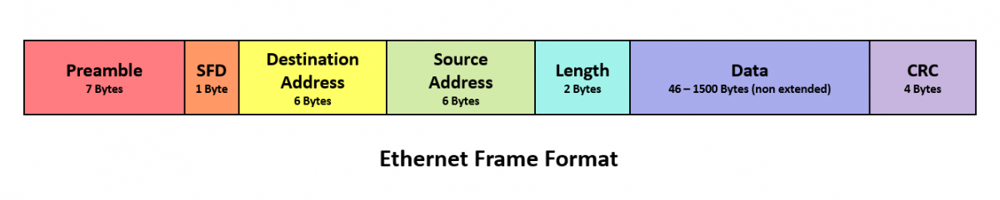
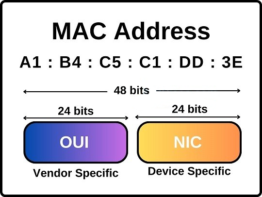
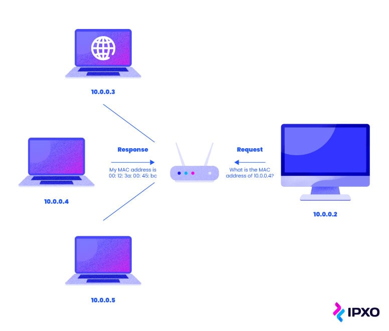
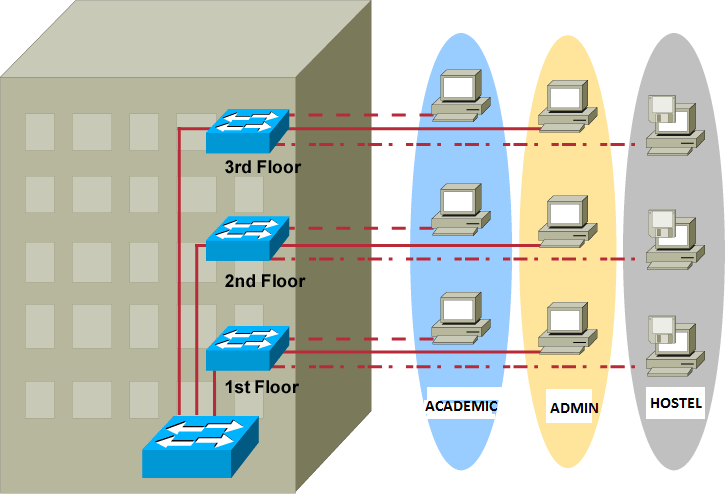

-
Ethernet standards
Ethernet standards define the characteristics, functionalities, and deployment details of a particular type of media. They establish the standardized technical specifications for hardware connectivity, and these specifications differ across various Ethernet types based on factors such as cabling and transmission speed.
Category IEEE documentation Standard Medium Speed Distance Ethernet 802.3a 10 Base2 Coxial 10 Mbps 200 meters 802.3 10 Base5 500 meters 802.3i 10 BaseT UTP 100 meters Fast Ethernet 802.3u 100 BaseTx UTP 100 Mbps 100m 100 BaseFx MMF 2km 100 BaseFx SMF 20km Gigabit Ethernet 802.3z 1000 Base T UTP 1 Gbps 100m 1000 Base SX MMF 275m 1000 Base LX 512m 1000 Base LX SMF 20km 1000 Base SH 80km 10 Gig Ethernet IEEE 802.3ae 10GBase-ER SMF 10 Gbps 10km 10GBase-LR 40km
-
Ethernet Frame
Ethernet frame is a single packet of data under network layer, determines how data is transported from one network device to another. It includes the MAC addresses of the source and destination hosts, the frame type identifier, data payload, and a Frame Check Sequence (CRC) for error detection.
-
Preamble
A 7-byte long field indicating the start of the frame and allowing establishment of bit synchronization between sender and receiver.
-
SFD (Start of Frame Delimiter)
A 1-byte field, indicating that upcoming bits are the starting of the frame.
-
Destination Address
A 6-byte field containing the MAC address of the destination machine.
-
Source Address
A 6-byte field containing the MAC address of the source machine.
-
Length
A 2-byte field indicating the length of the entire Ethernet frame.
-
Data
Also known as Payload.
-
CRC (Cyclic Redundancy Check)
A 4-byte field consisting of a 32-bit hash code data generated over the 4 previous fields. Used to check if the data was corrupted during transmission.
-
-
MAC address
A MAC address which stands for Media Access Control is a unique, 12 in length alphanumeric identifier assigned to each network interfaces. Works on the bottom of data link layer.
- A MAC (Media Access Control) address is a unique identifier assigned to network interface controllers (NICs) by the manufacturer.
- It is a hardware address and is associated with the physical network interface of a device.
- MAC addresses are 48-bit addresses expressed in hexadecimal format (e.g., 00:1A:2B:3C:4D:5E).
- MAC addresses are used at the data link layer (Layer 2) of OSI model.
- They provide a unique identity to devices within a local area network (LAN) and are used for addressing and identifying data packets at the data link layer.
- MAC addresses are used for communication within a LAN and are not routable over the internet.
-
Broadcasting
Broadcasting in widespread transmission of data packets to all devices in a network at the same time.

-
The Difference Between Hub, Switch, and Router
Hubs, switches, and routers are all physical devices that let you connect one or more computers to other computers, networked devices, or to other networks.
Hub operates at the physical layer (Layer 1) of the OSI model, and it is used for connecting multiple devices together and making them act as a single network segment and allows for transmitting bits. It doesn't distinguish between devices and doesn't filter traffic.
Switch operates at the data link layer (Layer 2) transmitting frames. It uses MAC addresses to intelligently forward data only to the device for which the data is intended.
Router operates at the network layer (Layer 3) transmitting packets, is responsible for receiving, analysing network packets from different networks.
-
CSMA/CD & Collision
Carrier Sense Multiple Access with Collision Detection (CSMA/CD) is a network protocol for management transmission in Ethernet networks.
In a situation where two devices want to use same data channel to transmit data at the same time, a collision occurs. CSMA/CD enables devices to detect this collision and stop transmitting and after time retry transmission.
-
Duplex
Half-duplex is a type of communication in which data can be transmitted in two directions, but not at the same time. In contrast, full duplex is a type of communication in which data can be transmitted in two directions at the same time.

-
ARP & Detecting Doubled IP Address
The Address Resolution Protocol (ARP) is a network layer protocol that facilitates the mapping of an IP address to a lower layer data link address, like Ethernet or MAC.
In simpler terms, ARP operates by broadcasting a message (e.g., over Ethernet) from one host, let's call it host1, to the entire network. This message poses a question: "Who owns the IP address IP1?" Host2, the owner of IP1, then responds with its Ethernet address, E2. As a result, host1 learns that the host with IP address IP1 is associated with the Ethernet address E2.
Detecting doubled IP addresses typically involves the use of network protocols such as ICMP and ARP to identify IP conflicts.

-
BOOTP & DHCP
Bootstrap Protocol (BOOTP) is a protocol used in to automatically assign an IP address to network devices from a configuration server.
Dynamic Host Configuration Protocol (DHCP) is a next generation of BOOTP protocol, where a DHCP server dynamically leases an IP address to each device on the network.
-
VLANs
VLANs (Virtual Local Area Networks), are a way to logically segment a physical network into multiple isolated logical networks.
VLANs enhance network efficiency, security, and manageability by possibility of grouping devices based on factors like department, function, or project, while keeping them separate in terms of broadcast domains.
